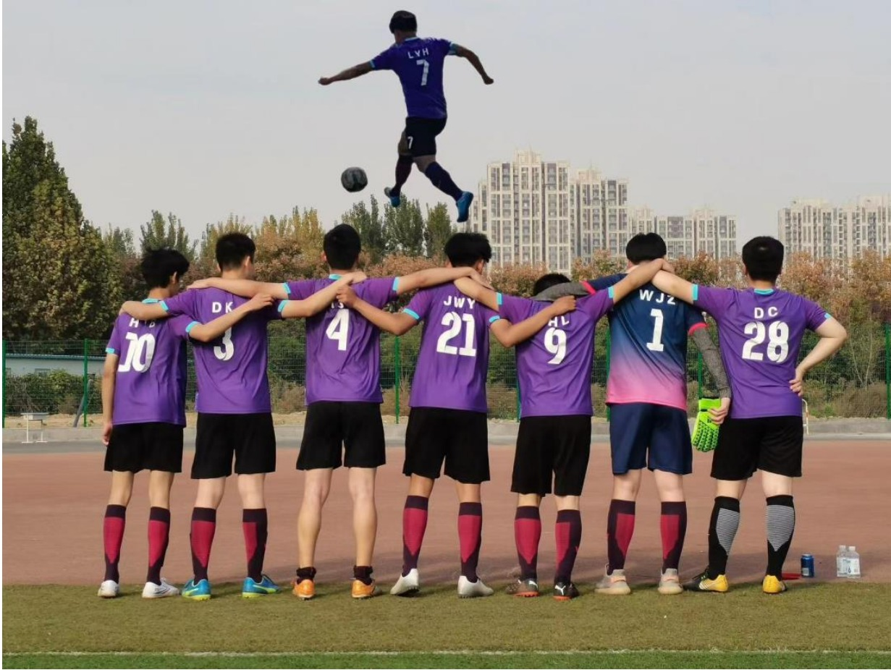
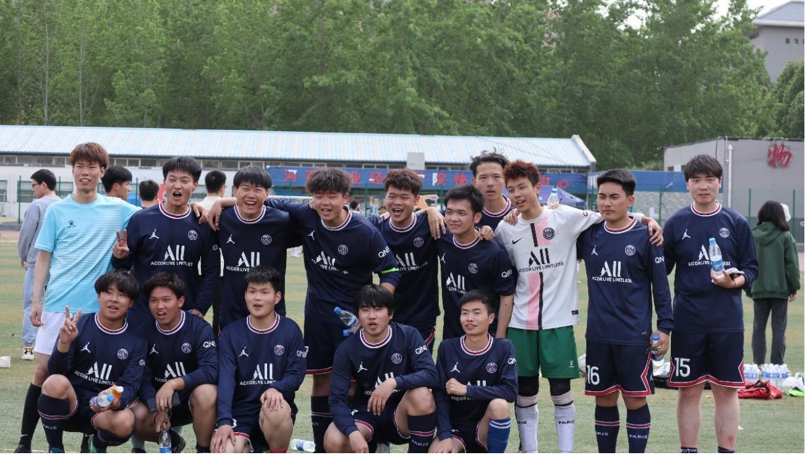
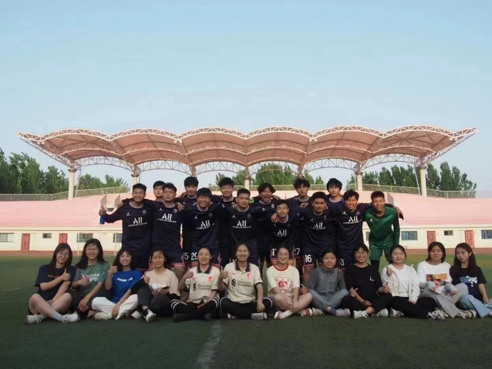
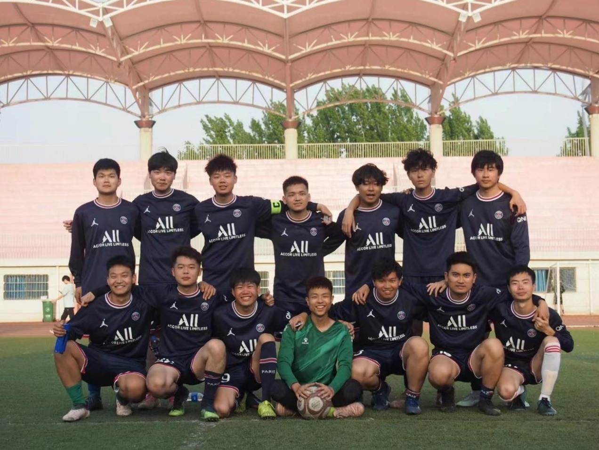
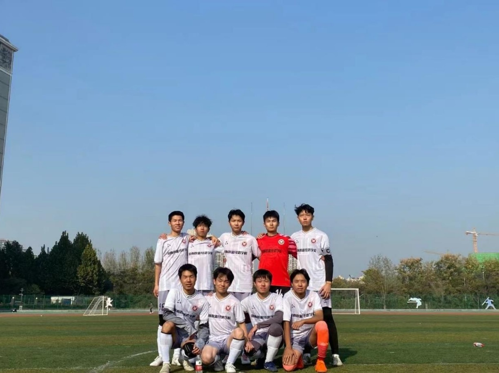
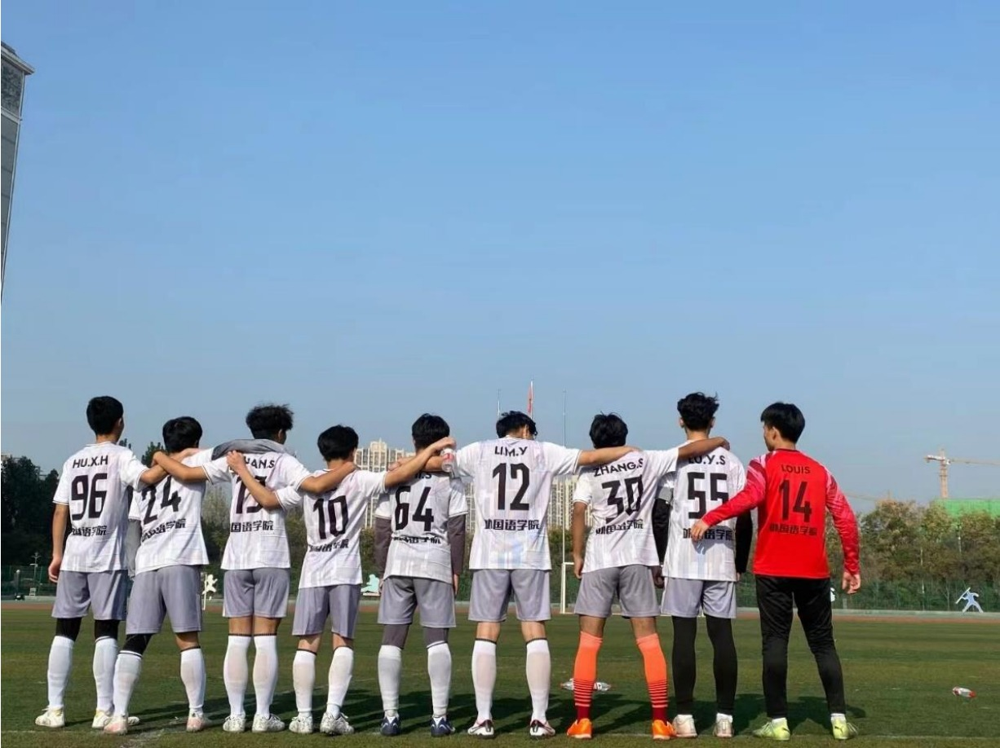
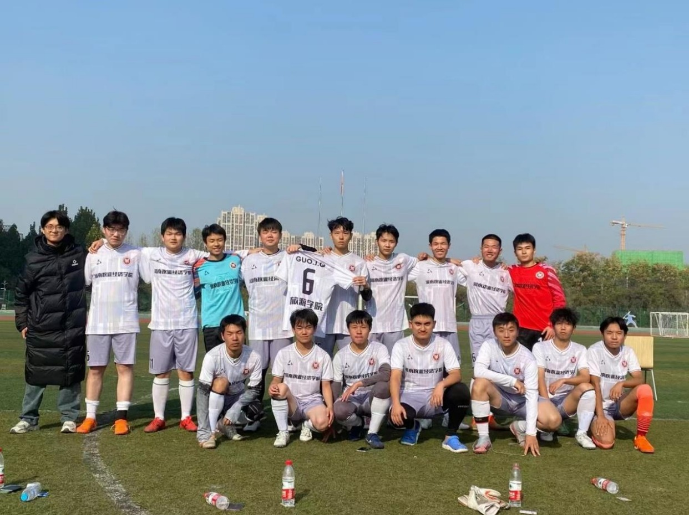

1 Goal 对阵 外国语学院(45')
1 Goal 对阵 食品与生物工程学院(2')
1 Goal 对阵 动物科技学院(9')
1 Goal 对阵 动物科技学院(12')
1 Goal 对阵 动物科技学院(21')
1 Goal 对阵 食品与生物工程学院(17')
1 Goal 对阵 动物科技学院(7')
1 Goal 对阵 动物科技学院(30')
1 Goal 对阵 动物科技学院(37')
1 Goal 对阵 旅游学院(32')
2023/11/9 （小组赛）
外国语学院 1:0 旅游学院
2023/11/12 （小组赛）
外国语学院 0:0 能源与智能工程学院
2023/11/14 （小组赛）
食品与生物工程学院 2:2 外国语学院
2023/11/16 （小组赛）
动物科技学院 0:6 外国语学院
2023/11/21 （半决赛）
外国语学院 0:0（3:1） 卡洛理工国际学院
2023/11/23 （决赛）
外国语学院 0:1 动物医药学院
“当我大一的时候孤零零一个人在外国语找足球队的时候，只剩下大四的三位学长在踢球，还好那一年合并了弘远书院，我正式加入了一支属于自己的球队，大一结束，外国语的学长们毕业，把队长袖标交给我，就是我现在戴着的灰色那个，他们什么也没说，我明白学长们没有完成的心愿是什么，他们最好的成绩是全校区第八名，从那时起我就想陪着弘远书院的兄弟们去争一争，沉淀了两年有了竞争力和阵容厚度，没想到弘远书院只存活了两年。在这次开学前夕我心想外国语学院又要重蹈覆辙了吗？我想一定是上天眷顾我让我遇到你们，让我想起了曾经外国语学长们没有完成的心愿，也许我们这次不能突破自己的上限，但是从第一天认识你们到一起拼搏至现在的这些日子，我坚信，你们一定一定可以把外国语学院带到另一个高度，你们就像曼联92班一样闪耀，这是独属于你们青春风暴岁月”
23年11月16日下午14：19分，看到永帅在“外国语梦之队”群聊所发布的此次校园足球的小组赛赛果，每个比赛得分都很精彩，最后也确保小组出线，这我心里是十分激动的！真的非常难以平复当时的心情，这就是热爱足球的一种表现吧！想起来18年秋天我、戴畅和韩佳伟怀着一腔热血创建了学院的足球队，学院老师也非常支持！当时也是意气风发，参加第一次校内足球比赛的时候，我们硬是凑够了人数才有参赛资格，但是场外的学院体育部和同学们都在为我们加油和欢呼，我仍然清晰的记得也是多亏了有两三个学长参加才不至于输的那么惨烈，其中有一场还是有位同学因伤无法上场，我们面临缺少一名上场队员的情况下坚持完了比赛，最后也是 0-9 的得分，小组比赛结束后无缘出线；
在 19 年外国语学院搬到了龙子湖校区，19 级新生的到来让我们有了创建学院女足的想法，在我们上一届足球队员的宣传下，这个想法也成为了现实，同时男足也加入了一些新的成员，我们也无比向往着第二次的校内足球比赛，可是真正到了比赛的时候，其他学院的实力确实比较强，男足和女足都尽自己最大的努力去完成比赛，特别是女足，那种拼劲真的震撼到了大家！男足虽然比较幸运出线了，但是也因为小组赛所造成的伤病问题无法进行接下来的淘汰赛，也就因此止步于第八名的成绩！但是此次我们相信在之后会有更好的成绩！
20 年是一个很可惜的学年，持续的疫情管控和居家学习使得我们无法进行校内足球，也是在这一年，我们足球队在线上持续交流学习经验和足球经验，成为了彼此的好朋友，大家不仅聊足球，而且聊学习，还有一些生活的趣事！虽然没有办法在一起开心的踢球，但是我们热爱足球的心始终在一起！
21 年迎新工作开始了，这时候的 18 级的我们已经大四了，此刻也碰巧遇到学校书院改革的契机，我们学院足球队和旅游学院足球队互相结合形成弘远书院足球队。在学校里平常的体育课和一些课余时间，我们还是和旅游学院比较熟悉的，同时也是期望我们合并之后的足球队的发展。比较欣慰的是，在这个时候遇见了旅院的足球兄弟以及热爱足球的新生学弟，书院的结合使得我们更加向往足球比赛的更高名次，但是这一年的足球比赛是友谊比赛性质的，因为当时还存在这疫情的反复，学校举办友谊足球赛也是为了营造良好的校园足球氛围，男队和女队的成绩也都很不错。可惜的是有好几位 18 级的同学都没有参与到这几场“18级退役毕业足球赛”中！
22 年夏季，我们 18 级毕业，23 年又迎来了一批新的同学，后来听说外国语学院和旅游学院又需要各自比赛，我不禁有些担心，但是每当我看到弘远书院足球队群聊中大家对待足球训练和足球比赛的热情和积极，我又充满了希望！终于，在23年的足球比赛中，外国语学院小组出线了！各项成绩也很优秀！
自从学院足球队创建以来，老师的支持从未中断过，而且这还是第一次获得这么好的成绩，相信在接下来的比赛中仍然会有更好的成绩！这样的成绩离不开大家的日常训练，我们都没有看错大家，也一直相信大家！在此真心的祝福各位在接下来的比赛勇创佳绩，再创记录，也希望各位在比赛的时候注意安全，保护自己！比赛第一，友谊第二，我们所收获的东西远比比赛成绩要多得多！足球让我们相聚！足球让我们激动！足球让我们充满希望和值得怀念！
加油！永帅！加油！外国语学院梦之队！
（附：谢谢永帅，这几年辛苦了，你身上的压力并不小，谢谢你 让我们几个学长看到这样的足球盛宴，谢谢你和各位学弟让我们 的梦想得以实现！同时也希望我们外国语学院的足球精神传承下 去，相信在你的带领下和下一届学弟的带领下，我们外国语学院 的足球队越来越棒！）
2018-2019 年外国语学院足球队合影留念
2019-2020 年外国语学院足球队合影留念
2021-2022 年弘远书院足球队合影留念 1
2021-2022 年弘远书院足球队合影留念 2
2021-2022 年弘远书院足球队合影留念 3
2023-2024 年外国语学院足球队合影留念 1
2023-2024 年外国语学院足球队合影留念 2
2023-2024 年外国语学院旅游学院足球队合影留念
“请大家珍惜此时此刻，因为或许我们现在就是最好的外国语梦之队。我们彼此只相识80天，明天却要去挑战彼此相识几百天乃至一千多天的所谓的豪门动医，一定会有人说这是大卫挑战巨人哥里亚般的故事，他们会赞赏我们的勇气，他们会学习我们的意志，但只有我们自己明白，我们不是所谓的大卫，他们也不是危言耸听的哥里亚巨人，站在同一片舞台下，我们会以平等的姿态挑战他们，外国语梦之队挑战动医，仅此而已。”